Cesty na kole — expedice 2001
| Kdy | 28.7. - 9.8.2001 |
|---|---|
| Kolik | 983 km |
| Účastníci | Pája, Mišák |
| Přejeté průsmyky | Engleberg (1050), Passo del San Gottardo (2108), Simplonpass (2006), Grimselpass (2165), Brünigpass (1008) |
| Trasa | GoogleEarth mapa (kmz) |
| Odkazy | (galerie nedostupná) |
| Odkazy jinam | Interaktivní cyklistická mapa Švýcarska, Seznam Švýcarských cyklotras, Jungfrau region |
| 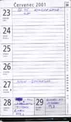 | 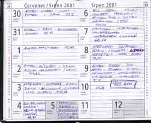 |
| 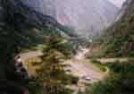 |
| 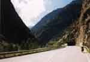 |
| 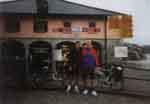 |
| 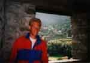 |
| 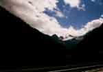 | 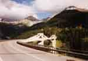 | 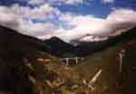 |
| 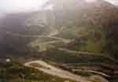 |
| 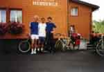 |